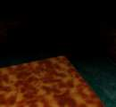
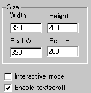
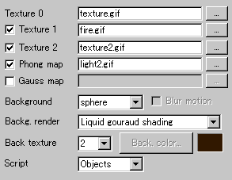
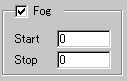
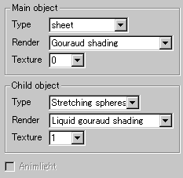
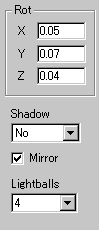
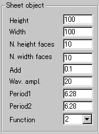

|

|
|
This applet provides a limited version of
Anfy 3D, a set of Java™ applets capable of realtime 3D
rendering. This version, called "light", only renders
selected texture-mapped objects with fog and realistic lightning
effects. The available obbjects are sheet, sphere and cone.
If you need more objects or want to visualise your own 3D
scenes, use anfy3d player.
[More technical
information about available parameters can be found here.]
Most parameters are self-explanatory and you
can always see brief description of each parameter by moving
the mouse pointer over the wizard.
|
 |
First of all, define the actully displayed applet size
and its internally calculated size at "Width",
"Height", "Real W"
and "Real H".
Then you decide if textscroll function
is enabled by checking "Enable textscroll"
box.
|
|
You can also check "Interactive mode"
box, if you would like the light source controled by
the mouse pointer.
|
 |
Next, set five texture images
at respective texture name. Texture0, 1, 2 are
ordinary textures. |
|
If you only use one texture, set it at number 0 and
leave the rest blunk.
This will reduce the total download time. Set phong
map if you require phong rendering. Likewise, set
gauss map if gauss rendering is used. These rendering
modes are quite popular in 3D world.
Note that all texture images must be sized at either
64*64 or 128*128 for internal optimisation.
Next you can decides the background effect as a choice
from black, sphere and colour.
If your choice is black, blur motion effect can
be used for rendering objects. If your choice is colour,
then, decides your desired colour from colour dialog.
If your choice is sphere, you need to select a rendering
option from 15 different rendering or shading modes.
Some of them are quite alien for those who are unfamiliar
with 3D modelling, but it's not too difficult to see
the difference when you test one by one.
The available options for background rendering are:
|
0 Plain texture
1 Gouraud shading
2 Phong shading ** NOTE: "phongmap" must
be loaded
3 Gaussian phong shading ** NOTE: "gaussmap"
must be loaded
4 Transparent (light)
5 Transparent (medium)
6 Liquid texture
7 Liquid gouraud shading
8 Liquid phong shading ** NOTE: "phongmap"
must be loaded
9 Liquid transparent
10 Reflects mirror view ** NOTE: texture
is ignored, a mirror must exists
11 Particles ** NOTE: texture is ignored
12 Darker plain texture
13 Metal shading ** NOTE: "phongmap" must
be loaded
14 Environment mapping
|
When you've selected the background rendering option,
you then have to choose the texture number for
the rendering.
Next, you can select a type of forground animation
from either labyrinth or objects. This
choice will decide the following parameters to some
degree. Labyrinth scrips control the 3D labyrinth animation,
while objects script rotate selected objects.
|
 |
Here, you set fog effect
by specifying the starting and finishing point of
the effect. |
|
 |
Now, you have to set up foreground
objects. There are two types of them: main objects
and child objects. You can select either
sphere, sheet, or cone as a
main pobject, while troids, stretching spheres,
or cones can be the child objects. |
|
|
Once you select objects for both main and child, next
you select a respective render type. The same 14 render
types for background is available for objects.
Next, select the texture number for respective objects.
If your choice of script type was "labyrinth",
"Animlight" effect is available for
your choice. Check it if you want.
|
 |
If your choice of script was "objects",
you are able to control the rotation velocity
of the objects, high/low shadow effect, mirror
effect and light balls effect at respective parameters
shown left.
Next, if your choice of main objects is a sheet,
the following parameters are activated shown below
left. "Height" and "Width"
represent the height and width of the sheet, while
N height faces and N width faces
stand for how many divisions to the sheet are
made both vertically and horizontally.
|
|
 |
"Add" parameter controls
the waving animation of the sheet, together with
the wave amplitude parameter and the periods
1&2 of the vertical waving and horizontal
waving respectively. Finally, there are three
possile wave functions available for your
choice. |
|
|
|